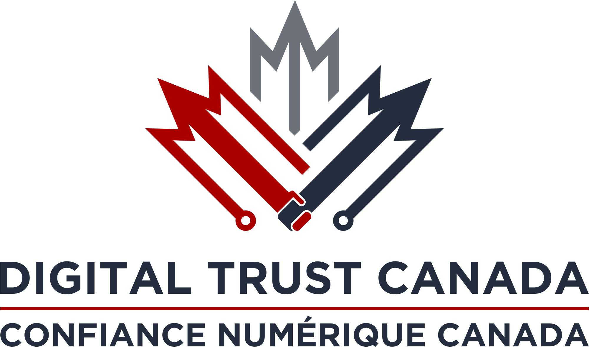

Nous avons élargi notre mandat en nous appuyant sur les fondations établies par le Laboratoire de confiance numérique Canada (LabCN), afin d’affirmer notre orientation stratégique à l’échelle nationale.
Nous finalisons maintenant les dernières touches de notre nouveau site Web, qui reflétera pleinement notre mission renouvelée et nos ambitions nationales.
Cette plateforme deviendra un point de référence pour nos partenaires, collaborateurs et intervenants clés. Une annonce officielle et un lancement complet suivront très bientôt.
We have expanded our mandate by building on the foundations established by the Digital Trust Laboratory of Canada (LabCN), refining our strategic direction at the national level.
We are now completing the final touches on our new website, which will fully reflect our renewed mission and national ambitions.
This platform will become a reference point for our partners, collaborators, and key stakeholders. An official announcement and full launch will follow very soon.
Establish Canada as a global leader in digital trust.
Faire du Canada un leader mondial en matière de confiance numérique.
Digital Trust Canada is an independent not for profit organization working to make digital trust a cornerstone of Canada’s digital future.
Neutral and technology agnostic, we collaborate with governments, businesses, academia, and civil society to strengthen the infrastructure, tools, and practices that enable secure access, responsible data use, and sovereign data governance. Grounded in a mission to embed privacy, safety, and trust in every digital interaction, we help turn emerging technologies and global standards into real world solutions that serve Canadians.
Confiance numérique Canada est un organisme indépendant à but non lucratif qui œuvre à faire de la confiance numérique un pilier de l’avenir numérique du pays.
Neutre et indépendant des technologies, nous collaborons avec les gouvernements, les entreprises, le milieu universitaire et la société civile pour renforcer les infrastructures, les outils et les pratiques qui permettent un accès sécurisé, une utilisation responsable des données et une gouvernance souveraine des données. Portés par la volonté d’incarner la confidentialité, la protection et la confiance dans chaque interaction numérique, nous contribuons à transformer les technologies émergentes et les normes mondiales en solutions concrètes au service des Canadiens.
Canada is entering a new era where trust in digital systems is essential for economic growth, public services, national security, and the confidence of citizens.
Our work supports the development of a secure and interoperable digital ecosystem where data can move safely across sectors and jurisdictions, enabling innovation while protecting Canadians.
Le Canada entre dans une nouvelle ère où la confiance dans les systèmes numériques est essentielle à la croissance économique, aux services publics, à la sécurité nationale et à la confiance des citoyens.
Notre travail contribue à bâtir un écosystème numérique sécurisé et interopérable où les données peuvent circuler de manière fiable entre les secteurs et les juridictions, tout en protégeant les Canadiens.